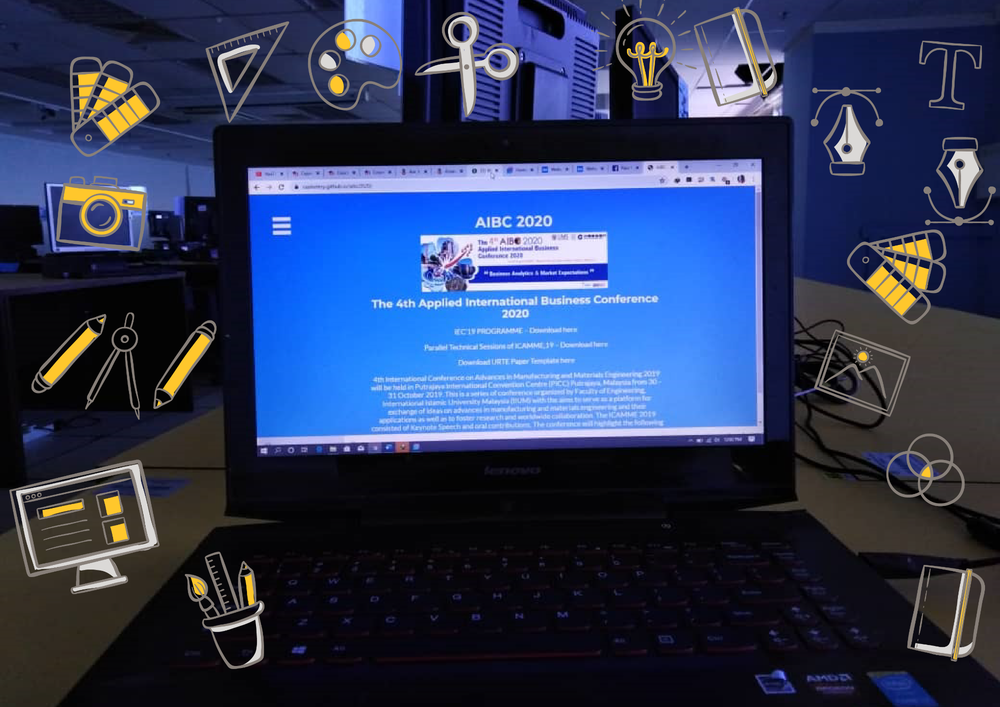
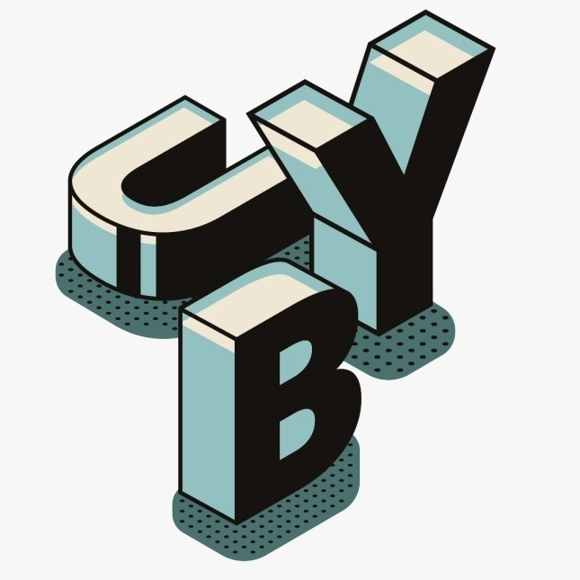
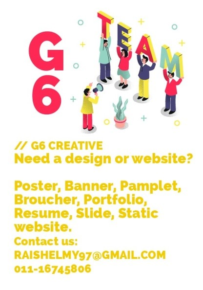
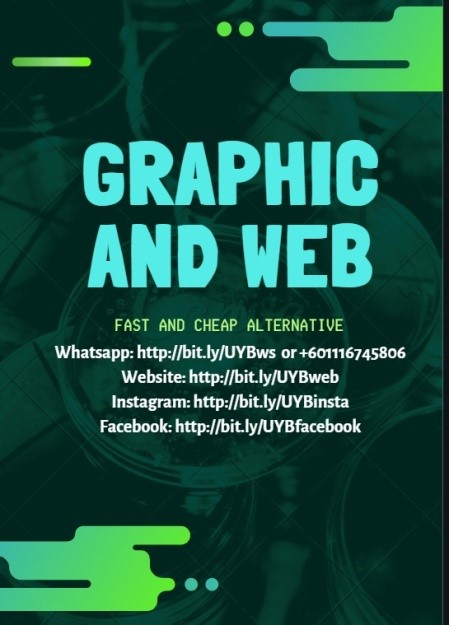
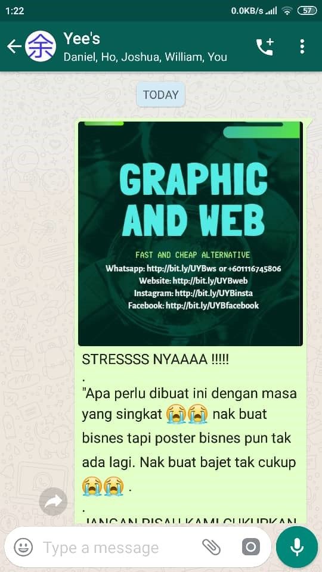
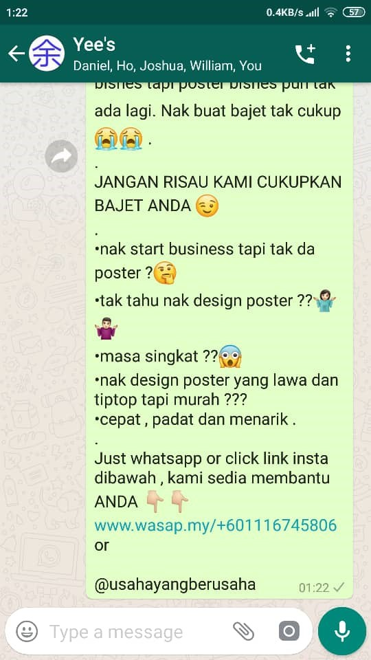
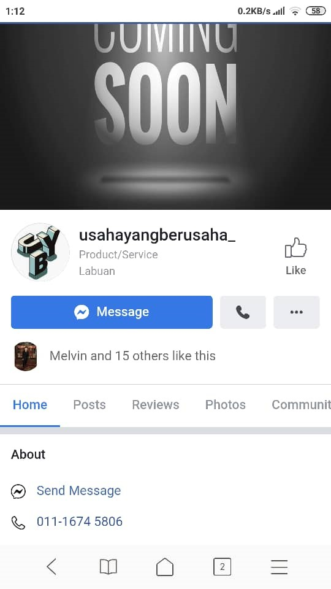
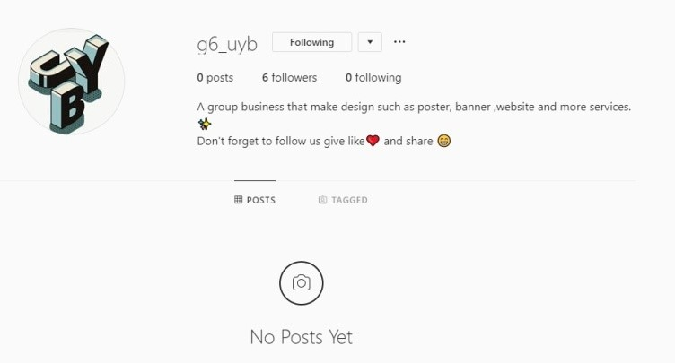
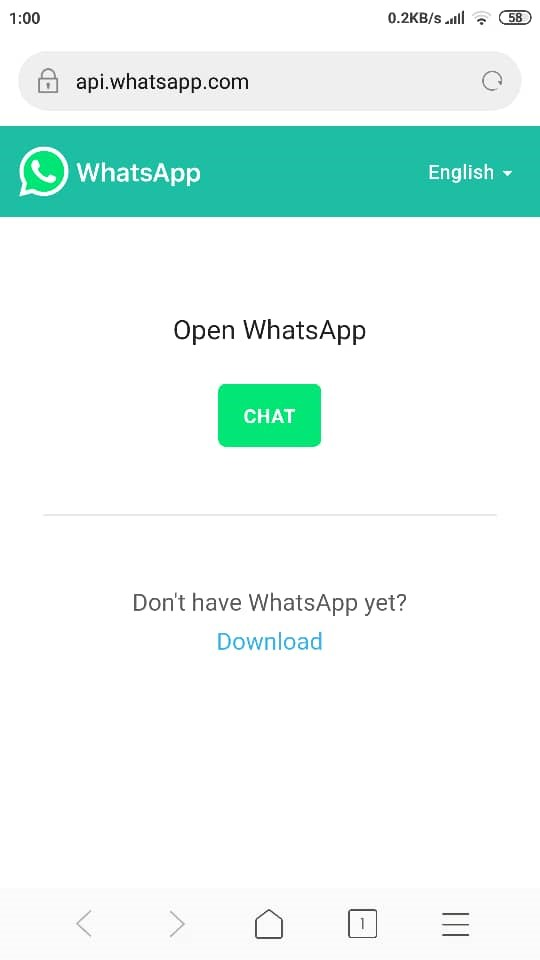
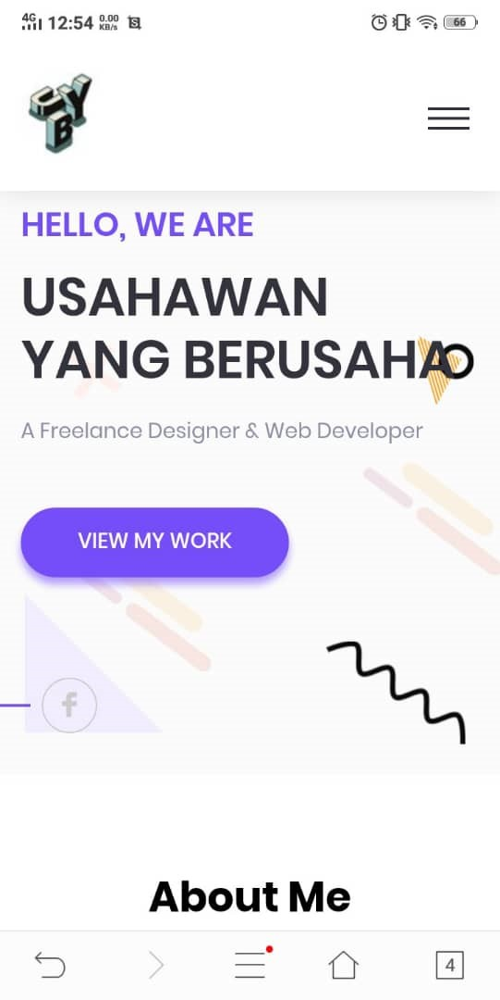

<!DOCTYPE html>
<html>

<head>
    <meta charset="utf-8">
    <meta name="viewport" content="width=device-width, initial-scale=1.0, shrink-to-fit=no">
    <title>Home - Brand</title>
    <link rel="stylesheet" href="assets/bootstrap/css/bootstrap.min.css">
    <link rel="stylesheet" href="https://fonts.googleapis.com/css?family=Montserrat:400,700">
    <link rel="stylesheet" href="https://fonts.googleapis.com/css?family=Kaushan+Script">
    <link rel="stylesheet" href="https://fonts.googleapis.com/css?family=Droid+Serif:400,700,400italic,700italic">
    <link rel="stylesheet" href="https://fonts.googleapis.com/css?family=Roboto+Slab:400,100,300,700">
    <link rel="stylesheet" href="assets/fonts/font-awesome.min.css">
</head>

<body id="page-top">
    <nav class="navbar navbar-dark navbar-expand-lg fixed-top bg-dark" id="mainNav">
        <div class="container"><a class="navbar-brand" href="#page-top">Usahawan Yang Berusaha</a><button data-toggle="collapse" data-target="#navbarResponsive" class="navbar-toggler navbar-toggler-right" type="button" data-toogle="collapse" aria-controls="navbarResponsive"
                aria-expanded="false" aria-label="Toggle navigation"><i class="fa fa-bars"></i></button>
            <div class="collapse navbar-collapse" id="navbarResponsive">
                <ul class="nav navbar-nav ml-auto text-uppercase">
                    <li class="nav-item" role="presentation"><a class="nav-link js-scroll-trigger"><strong>SECTION 1</strong></a></li>
                    <li class="nav-item" role="presentation"><a class="nav-link js-scroll-trigger" href="#services" target="_top">1.1&nbsp;Products / Services<br></a></li>
                    <li class="nav-item" role="presentation"><a class="nav-link js-scroll-trigger" href="#members" target="_top">1.2&nbsp;The Members in Our Company<br></a></li>
                    <li class="nav-item" role="presentation"><a class="nav-link js-scroll-trigger" href="#promotion" target="_top">1.3&nbsp;The Promotion of Our Products / Services<br></a></li>
                    <li class="nav-item" role="presentation"><a class="nav-link js-scroll-trigger" href="#achievement" target="_top">1.4 The Achievement of Our Company<br></a></li>
                    <li class="nav-item" role="presentation"><a class="nav-link js-scroll-trigger" href="#profit" target="_top">1.5&nbsp;Sales / Profit<br></a></li>
                    <li class="nav-item" role="presentation"><a class="nav-link js-scroll-trigger"><strong>SECTION 1</strong></a></li>
                    <li class="nav-item" role="presentation"><a class="nav-link js-scroll-trigger" href="#contact">2.1&nbsp;Problems<br></a></li>
                    <li class="nav-item" role="presentation"><a class="nav-link js-scroll-trigger" href="#contact">2.2&nbsp;Solutions<br></a></li>
                    <li class="nav-item" role="presentation"><a class="nav-link js-scroll-trigger" href="#contact">2.3 Improvement (Suggestions / Recommendations)<br></a></li>
                    <li class="nav-item" role="presentation"><a class="nav-link js-scroll-trigger"><strong>appendix</strong></a></li>
                </ul>
            </div>
        </div>
    </nav>
    <header class="masthead" style="background-image:url('assets/img/header-bg.jpg');">
        <div class="container">
            <div class="intro-text">
                <div class="intro-lead-in"><span>Welcome to UYB</span></div>
                <div class="intro-lead-in"><span><br>Section One (1) – Portfolio<br><br><br><br></span></div>
                <div class="intro-heading text-uppercase"><span style="font-size: 47px;">this is eportfolio for &nbsp;uyb group 6 apk</span></div><a class="btn btn-primary btn-xl text-uppercase js-scroll-trigger" role="button" href="http://api.whatsapp.com/send?phone=601116745806">whatsapp us directly</a>
                <a
                    class="btn btn-primary btn-xl text-uppercase js-scroll-trigger" role="button" href="#promotion" style="margin: 23px;">section 2 - reflection of business</a>
            </div>
        </div>
    </header>
    <section id="services">
        <div class="container">
            <div class="row">
                <div class="col-lg-12 text-center">
                    <h2 class="text-uppercase section-heading">1.1 PRODUCT/ SERVICES</h2>
                    <h3 class="text-muted section-subheading" style="height: 394px;"><br>As for the Picture 1 which has been shown above, it is our<br>company or group business – Design and Web. As for the design category, there<br>are several and different designs which can be done such as the banner, the<br>poster,
                        the flyers and others. While as for the web category, it is a set of<br>webpages that helps an individual, especially the one who is searching for more<br>information. For an example, there are some website existing, but someone
                        can<br>just type anything or specific information they want to know in the Google<br>search engine and then it will exactly appear.</h3>
                    <h3 class="text-muted section-subheading" style="height: 418px;">Before we started up everything with this business idea,<br>all of us were thinking very hard to suggest what kind of suitable business we<br>can run. It took a long time to think of a lot of business ideas, but finally<br>in the end,
                        one of our group members gave a great suggestion for our business<br>idea. It was the business of Design and Web which is shown in Picture 1 above.<br>After all of us tried to think of this idea over and over again, we all agreed<br>with
                        this business idea as the decision we made to run our real company<br>business. Plus, We never gave excuses for ourselves to step back and give up,<br>but we always insisted to move forward to run our company business because this<br>is
                        the way how we will achieve our glorious success in our future.<br></h3>
                </div>
            </div>
        </div>
    </section>
    <section id="team" class="bg-light" style="padding: 26px;">
        <h2 class="text-uppercase text-center d-flex justify-content-center section-heading">1.2 THE MEMBERS IN OUR COMPANY</h2>
        <div class="container">
            <div class="row">
                <div class="col-sm-4">
                    <div class="team-member">
                        <h4>RAIS HELMY BIN SAPIULLAH</h4>
                        <p class="text-muted">FOUNDER</p>
                        <p class="text-muted">BI17210297</p>
                    </div>
                </div>
                <div class="col-sm-4">
                    <div class="team-member">
                        <h4>BENJAMIN YEE JING MIN</h4>
                        <p class="text-muted">MANAGER</p>
                        <p class="text-muted">BI19160304</p>
                    </div>
                </div>
                <div class="col-sm-4">
                    <div class="team-member">
                        <h4>DIENNIELDO MEIJIN<br></h4>
                        <p class="text-muted">RESEARCHER</p>
                        <p class="text-muted">BI19110252</p>
                    </div>
                </div>
                <div class="col-sm-4">
                    <div class="team-member">
                        <h4>LIM HUA YONG<br></h4>
                        <p class="text-muted">LEAD ARTIST</p>
                        <p class="text-muted">BI19110186</p>
                    </div>
                </div>
                <div class="col-sm-4">
                    <div class="team-member">
                        <h4>NORHAIDA BINTI HASSAN<br></h4>
                        <p class="text-muted">MARKETER</p>
                        <p class="text-muted">BI19110146</p>
                    </div>
                </div>
                <div class="col-sm-4">
                    <div class="team-member">
                        <h4>SYARIFAH NURUL ATHIRAH BINTI MOKDIN<br></h4>
                        <p class="text-muted">DESIGNER</p>
                        <p class="text-muted">BI19160353<br></p>
                    </div>
                </div>
            </div>
        </div>
        <p class="text-center">As for Table above, it highlights that our members who<br>are working to run this business in the name of “Usahawan Yang Berusaha (UYB)”.<br>The table also indicates the informational details (Name and Matrix Number) of<br>our members in this
            company. Plus, “Usahawan Yang Berusaha (UYB)” is the name<br>of our company group. It is because we want to be the best business group among<br>all by surpassing the expectations of others.<br></p>
        <p class="text-center"><br><br>First and foremost, Rais Helmy Bin Sapiullah (BI17210297)<br>was the first member who raised his hand up and volunteered himself to become<br>the leader of our business group. All of us agreed that he was worth of being<br>our great leader
            because he had gone through those tough experiences before he<br>furthered his studies in Universiti Malaysia Sabah Kampus Antarabangsa Labuan<br>(UMSKAL). No matter what we face what will come to us, we all believed in<br>ourselves and succeeded
            everything successfully together with our great leader<br>in the future. <br><br><br><br><br><br></p>
        <p class="text-center">Before beginning our company business, it was compulsory<br>for all of us to start planning our strategies for the purpose of running our<br>group business. Of course, we would not forget the learnings of Business Model<br>Canvas (BMC) because
            it was useful and acceptable for the business people to<br>apply it to do their business. With the nine (9) aspects in BMC, they were very<br>much convenient for us to draw and write our strategical ideas to plan up everything<br>to run our
            business easily. Although we took a lot of time to plan everything<br>properly, but we still stayed calm and chilled down when planning our strategies<br>for our group business. The reason for that is to not drag all of us into<br>chaotic
            mess if we are staying ourselves in the state of confusion. So, it is<br>better to stay being calm as well in order to smoothen the process of running<br>our company business.<br></p>
    </section>
    <section id="services" style="height: 2136px;padding: 0;">
        <div class="container">
            <div class="row">
                <div class="col-lg-12 text-center">
                    <h2 class="text-uppercase section-heading"><strong>1.3 The Promotion of Our</strong><br><strong>Products / Services</strong><br></h2>
                    <h3 class="text-muted section-subheading" style="height: 260px;">The promotion<br>of product means disseminating the information about the product, product line,<br>brand and company to the prospective buyers with the intent to generate sales<br>and develop a brand loyalty. The promotion of product
                        is important to our<br>company or group business because it can function to stimulate demand for a<br>product by creating awareness and interest among our customers. Plus, it can<br>even stabilize sales by highlighting the importance
                        and features of the<br>product.<br></h3>
                    <h3 class="text-muted section-subheading" style="height: 113px;">As for the way we promoted our product in our business of<br>“Design &amp; Website”, we were applying two methods only. So, the first method<br>will be offline activity, while the second one will be online activity.<br></h3>
                    <h3 class="text-muted section-subheading"
                        style="height: 232px;">As for the<br>first method – offline activity, we will use “face to face” mode to serve our<br>customers. It is because it will be easy for us to jot down the customers`<br>informational needs clearly when they want to ask to make
                        an order for their<br>products from our company business. Of course, we will reconfirm or repeat<br>everything what our customers have ordered accordingly in their order list.<br><br><br><br><br><br><br></h3>
                    <h3 class="text-muted section-subheading"
                        style="height: 144px;">While as for<br>the second method – online activity, we will be using four social medias to<br>serve our customers because it will be easier to communicate with one another<br>wherever we go. The following details (the four social
                        medias) is shown below:<br></h3>
                    <div class="table-responsive">
                        <table class="table">
                            <thead>
                                <tr>
                                    <th>Number</th>
                                    <th><strong>Social Media</strong><br></th>
                                    <th><strong>Name / Link</strong><br></th>
                                </tr>
                            </thead>
                            <tbody>
                                <tr>
                                    <td>1</td>
                                    <td>Facebook</td>
                                    <td>usahayangberusaha_</td>
                                </tr>
                                <tr>
                                    <td>2</td>
                                    <td>Instagram</td>
                                    <td>@g6_uyb</td>
                                </tr>
                                <tr>
                                    <td>3</td>
                                    <td>Whatsapp</td>
                                    <td>+601116745806</td>
                                </tr>
                                <tr>
                                    <td>4</td>
                                    <td>Website</td>
                                    <td>bit.ly/UYBweb</td>
                                </tr>
                            </tbody>
                        </table>
                    </div>
                    <h3 class="text-muted section-subheading" style="height: 241px;"><em>About the order</em><br><em>the customers make, we only take the order at a specific time (which will be</em><br><em>during the weekend, the holiday and our free time). But sometimes, our customers</em><br><em>asked us to do a last minute design. We could not accept the request because we</em><br><em>could not handle many orders in the same time. To make a perfect design, it</em><br><em>would take 3 days to complete the product. Most of our customers are the</em><br><em>students, the staffs and the lecturers in UMSKAL.</em><br><br></h3>
                </div>
            </div>
        </div>
    </section>
    <section id="team" class="bg-light" style="padding: 26px;">
        <h2 class="text-uppercase text-center section-heading"><strong>1.4 The Achievement of</strong><br><strong>Our Company</strong></h2>
        <p class="d-flex justify-content-center"><br><br><br><strong>&nbsp;</strong><br><br><strong>&nbsp;</strong><br><br>&nbsp;&nbsp;&nbsp; <strong>I.</strong>&nbsp;&nbsp;&nbsp;&nbsp;&nbsp;&nbsp;&nbsp;<br><strong>Collaboration</strong><br>When dealing with some<br>problems which came to affect
            our business rate, all of us were working together<br>as one to overcome the problems until they were solved successfully. This<br>collaboration consisted of three important aspects we had learnt and they were<br>“Teamwork, Team Cooperation
            &amp; Team Spirit”.<br></p>
        <p class="d-flex justify-content-center"><br><br><br>&nbsp;<br><br>&nbsp;&nbsp;&nbsp; <strong>II.</strong>&nbsp;&nbsp;&nbsp;&nbsp;&nbsp;&nbsp;&nbsp;<br><strong>Learn Something New</strong><br><br><br>Throughout the duties we<br>did together, it was not a waste of time for us to work
            in this group business.<br>We spent our bloody and sweaty effort on running this company business. Yes, it<br>consumed a lot of our energies but it was worth. Once we had tasted those hard<br>experiences just like living in a midst of hardship,
            we were glad to learn<br>something new. With those great experiences, we will appreciate and treasure<br>them as the new memories of our lifetime.<br></p>
        <p class="d-flex justify-content-center"><br><br><br>&nbsp;<br><br>&nbsp;&nbsp;&nbsp; <strong>III.</strong>&nbsp;&nbsp;&nbsp;&nbsp;&nbsp;&nbsp;&nbsp;<br><strong>No Financial Cost</strong><br><br><br>As for our business group,<br>we were quite different from others because our company
            business would only<br>cost us our time and the utilities of our university, but there is no financial<br>cost involved in our business. Without the financial cost, we still maximized<br>our profit which exceeded our target (RM500) unexpectedly
            in the end. It was<br>considered as the best record for our business group.<br></p>
        <p class="d-flex justify-content-center"><br><br><br>&nbsp;<br><br>&nbsp;&nbsp;&nbsp; <strong>IV.</strong>&nbsp;&nbsp;&nbsp;&nbsp;&nbsp;&nbsp;&nbsp;<br><strong>Good Member Relationship</strong><br><br><br>No matter what kind of<br>problems we faced before, we would always remind ourselves
            to back up one<br>another. It is because we assumed this business group as our new home and we<br>also worked together as one big family. Therefore, we never left one another<br>alone or behind to deal with the problems.<br></p>
        <p class="d-flex justify-content-center"><br><br><br>&nbsp;<br><br>&nbsp;&nbsp;&nbsp; <strong>V.</strong>&nbsp;&nbsp;&nbsp;&nbsp;&nbsp;&nbsp;&nbsp;<br><strong>Satisfaction</strong>&nbsp;<br>Our Customers were happy<br>when receiving their products because we always provided them with
            our good<br>quality services. Most of them wished that we could continue on our company<br>business in the future too. Hopefully, we can continue to serve them well in<br>our business if it is only possible in our future.<br></p>
        <p class="d-flex justify-content-center"><br><br><br>&nbsp;&nbsp;&nbsp; <strong>VI.</strong>&nbsp;&nbsp;&nbsp;&nbsp;&nbsp;&nbsp;&nbsp;<br><strong>The Maximization of Profit</strong><br><br><br>We set RM500 as our aim for<br>our profit in our business group. But after that, we never realized
            that we could<br>manage to achieve more than RM 800 and it was the highest profit we ever had in<br>our business record.<br></p>
    </section>
    <section id="team" class="bg-light" style="padding: 26px;">
        <h2 class="text-uppercase text-center section-heading"><strong>1.5 Sales / Profit</strong><br></h2>
        <p class="text-center d-flex justify-content-center">As for the Pie Chart 1 shown above, the total of our<br>profit earned in our business company is RM810.00. The information (the total<br>of profit in our business company) is shown below:<br></p>
        <div class="table-responsive">
            <table class="table">
                <thead>
                    <tr>
                        <th>Number</th>
                        <th>Dates</th>
                        <th>Profits (RM)</th>
                        <th>Percentage (%)</th>
                    </tr>
                </thead>
                <tbody>
                    <tr>
                        <td>1</td>
                        <td>1st Week of August in Year 2019</td>
                        <td>240.00</td>
                        <td>29.63</td>
                    </tr>
                    <tr>
                        <td>2</td>
                        <td>2nd Week of August in Year 2019<br><br></td>
                        <td>50.00</td>
                        <td>6.17</td>
                    </tr>
                    <tr>
                        <td>3</td>
                        <td>2nd Week of August in Year 2019<br></td>
                        <td>205.00</td>
                        <td>25.31</td>
                    </tr>
                    <tr>
                        <td>4</td>
                        <td>3rd Week of August in Year 2019<br></td>
                        <td>315.00</td>
                        <td>38.89</td>
                    </tr>
                    <tr>
                        <td></td>
                        <td>Total</td>
                        <td>810.00</td>
                        <td>100</td>
                    </tr>
                </tbody>
            </table>
        </div>
        <p class="text-center d-flex justify-content-center">In Pie Chart 1 about the profit in our business company in<br>Year 2019, it shows that it dropped from 1st Week of August to 2nd<br>Week of August. But suddenly, it rose increasingly and extremely until 3rd<br>Week of November. So, our profit
            (RM810) will be the new record in our business<br>company.<br></p>
    </section>
    <div class="text-center intro-lead-in"><span><br>Section Two (2) – Reflection About The Business<br></span></div>
    <section id="team" class="bg-light" style="padding: 26px;">
        <h2 class="text-uppercase text-center section-heading"><strong>2.1 Problems</strong><br></h2>
        <p class="text-center d-flex justify-content-center"><br><br><br><strong>&nbsp;</strong><br><br><strong>&nbsp;</strong><br><br><strong>A.</strong>&nbsp;&nbsp; <strong>The Assessment and Program</strong><br><br><br><br>All of our<br>group members were given a lot of assessments that needed to be
            done<br>completely. The assessments must be passed up or handed in according to the<br>exact dates of submission. Plus, most of us were first year students and it was<br>compulsory to join the organized programs actively in the first year.
            So, there<br>would be more upcoming events approaching us to participate. Therefore, it was hard<br>for us to arrange our schedule to run our company business.<br><strong>&nbsp;</strong><br><br><br><br><br><br></p>
        <p class="text-center d-flex justify-content-center"><br><br><br><strong>&nbsp;</strong><br><br><strong>B.</strong>&nbsp;&nbsp; <strong>The Laptop Problems</strong><br><br><br>Most of our laptops were only<br>ordinary, but not the high quality laptops. We didn’t have any laptops which<br>can do
            everything miraculously in our business company. So, it would be very<br>difficult to design our products for our customers. It is because many<br>softwares did not contain enough good quality uses or aspects which are basically<br>based on
            the art and creativity. Moreover, we also faced a lot of problems such<br>as lagging screen, full memory, unreachable internet and others.<br></p>
        <p class="text-center d-flex justify-content-center"><br><br><br>&nbsp;<br><br><strong>&nbsp;</strong><br><br><strong>C.</strong>&nbsp;&nbsp; <strong>The</strong><br><strong>Fussy Customers</strong><br><br><br>Some of our customers were<br>really picky, but they were decisive too. They had cultivated
            some attitudes<br>that we did not wish to see. They knew what they wanted, how they wanted it and<br>sometimes they would even offer some advises on how best to provide them with<br>what and how they wanted something.<br></p>
    </section>
    <section id="team" class="bg-light" style="padding: 26px;">
        <h2 class="text-uppercase text-center section-heading"><strong>2.2 SOLUTIONS</strong><br></h2>
        <p class="text-center d-flex justify-content-center"><br><br><br><strong>&nbsp;</strong><br><br><strong>A.</strong>&nbsp;&nbsp; <strong>Time</strong><br><strong>Management</strong><br><br>We will start learning to<br>manage to organize and plan how to divide our time between the incoming jobs<br>and
            our studies. Since there have many events and assessments we need to take<br>part, we must plan our daily schedule very well. Therefore, a good time<br>management enables us to work smarter and work in a shorter time.<br></p>
        <p class="text-center d-flex justify-content-center"><br><br><br>&nbsp;<br><br><strong>B.</strong>&nbsp;&nbsp; <strong>Advanced</strong><br><strong>Equipment</strong><br><br>We must upgrade our laptop<br>(RAM, graphics, storage) and make sure that laptop always stays in a good<br>condition in order
            to complete the jobs without wasting any time. In addition,<br>we can always check and update the latest version of Window. Plus, we can<br>download various software and applications for designing poster and editing<br>video.<br></p>
        <p class="text-center d-flex justify-content-center"><br><br><br><strong>&nbsp;</strong><br><br><strong>C.</strong>&nbsp;&nbsp; <strong>Maintain&nbsp;Our Customer Services</strong><br><br><br>We must lower our voice and<br>speak softly when having conversation with our customers. If the customer
            gets<br>louder, we must start speaking more slowly and in a lower tone. So, it will<br>avoid for having arguments with our customers. However, we should stay calm<br>when facing those fussy customers&nbsp;and discuss a better solution to try
            to<br>fulfill them. If it is possible, we will never take it personally. Plus, we will<br>always speak to the issue at hand and do not get personal, even if the customer<br>does.<br></p>
        <p class="text-center d-flex justify-content-center"><br><br><br>&nbsp;<br><br>&nbsp;<br><br><strong>D.</strong>&nbsp;&nbsp; <strong>Maintain</strong><br><strong>Relationship Between Customers</strong><br><br><br><br>Communication is an<br>essential way to build customer relationship. If we are
            always having a good<br>conversation with our customers to make sure that we fully understand their<br>demands before taking over the jobs. As for those frequently customers, we will<br>always remember their requirements. Of course, we must
            treat them being a<br>friend or chitchat with them too.<br></p>
    </section>
    <section id="team" class="bg-light" style="padding: 26px;">
        <h2 class="text-uppercase text-center section-heading"><strong>2.3&nbsp;Improvement</strong><br><strong>(Suggestions / Recommendations) </strong><br></h2>
        <p class="text-center d-flex justify-content-center"><br><br><br><strong>&nbsp;</strong><br><br><strong>&nbsp;</strong><br><br>&nbsp;&nbsp;&nbsp; <strong>I.</strong>&nbsp;&nbsp;&nbsp;&nbsp;&nbsp;&nbsp;&nbsp;<br><strong>Enhancing and Enriching Basic Knowledge</strong><br><strong>of Computing</strong><br><br><br><br><br><br><br>Most
            of the designers must<br>possess some knowledge of Computing. So, we can be as same as what they learn.<br>With the knowledge we have gained, we can proceed to improve our skill<br>practically to create a perfect designing product. Therefore,
            we can use<br>whatever we have learnt to apply on running our business company. <br></p>
        <p class="text-center d-flex justify-content-center"><br><br><br><strong>&nbsp;</strong><br><br>&nbsp;&nbsp;&nbsp;<strong>II.</strong>&nbsp;&nbsp;&nbsp;&nbsp;&nbsp;&nbsp;&nbsp;<br><strong>Upgrade the Computer Program – Software</strong><br><br><br><br><br>We will always focus and<br>concentrate
            about how our laptop was. Meanwhile, we can update or upgrade our<br>computer program. In the same time, the software will be upgraded too. After<br>that, u can choose to download something special to decorate customers` product<br>beautifully
            and wonderfully.<br></p>
        <p class="text-center d-flex justify-content-center"><br><br><br>&nbsp;<br><br><strong>&nbsp;</strong><br><br>&nbsp;&nbsp;&nbsp;<strong>III.</strong>&nbsp;&nbsp;&nbsp;&nbsp;&nbsp;&nbsp;&nbsp;<br><strong>Acquire the High Developed Laptop</strong><br><br><br><br>Nowadays, e-technology<br>sector is
            getting more developed and advanced everywhere. Many laptops will<br>have some new and different software systems. With the uses of computer<br>software systems, we will normally emphasize more about the art and creativity<br>to design the
            product for our beloved customers.<br></p>
        <p class="text-center d-flex justify-content-center"><br><br><br><strong>&nbsp;</strong><br><br>&nbsp;&nbsp;&nbsp; <strong>IV.</strong>&nbsp;&nbsp;&nbsp;&nbsp;&nbsp;&nbsp;&nbsp;<br><strong>Active in Social Medias</strong><br><br><br><br>We will encourage and<br>support one another to be more active
            in playing social medias. This is because<br>we will help out to promote our service or product around Labuan through our<br>social medias. If it is possible, we hope that the name of our business company<br>will be spread out of Labuan, but
            around the whole country – Malaysia.<br></p>
        <p class="text-center d-flex justify-content-center"><br><br><br>&nbsp;&nbsp;&nbsp; <strong>V.</strong>&nbsp;&nbsp;&nbsp;&nbsp;&nbsp;&nbsp;&nbsp;<br><strong>Enjoy Running Business</strong><br><br><br>When running our company<br>business, we should not bring ourselves into stressful chaos because
            it will<br>only bring us a lot of troubles. So, we would like to prefer ourselves to enjoy<br>every moment we move in running our business. Therefore, it will be excited to<br>watch one another enjoying to run the business happily. <br></p>
    </section>
    <div class="text-center intro-lead-in"><span>APPENDIX<br></span></div>
    <section id="team" class="bg-light" style="padding: 26px;">
        <h2 class="text-uppercase text-center section-heading">LOGO</h2>
        <h2 class="text-uppercase text-center section-heading">POSTER TO PROMOTE</h2>
        <h2 class="text-uppercase text-center section-heading">promotion for business</h2>
        <h2 class="text-uppercase text-center section-heading">promotion for business</h2>
        <div class="table-responsive">
            <table class="table">
                <thead>
                    <tr>
                        <th>Social Medias &amp; Links</th>
                        <th>Pictures</th>
                    </tr>
                </thead>
                <tbody>
                    <tr>
                        <td>Facebook (<a href="http://bit.ly/UYBfacebook">http://bit.ly/UYBfacebook</a>)<br></td>
                        <td></td>
                    </tr>
                    <tr>
                        <td>Instagram (<a href="http://bit.ly/UYBinsta">http://bit.ly/UYBinsta</a>)<br></td>
                        <td></td>
                    </tr>
                    <tr>
                        <td>Whatsapp&nbsp;<br>(<a href="http://bit.ly/UYBws">http://bit.ly/UYBws</a>)<br></td>
                        <td></td>
                    </tr>
                    <tr>
                        <td>Website<br>(<a href="http://bit.ly/UYBweb">http://bit.ly/UYBweb</a>)<br></td>
                        <td></td>
                    </tr>
                </tbody>
            </table>
        </div>
    </section>
    <script src="assets/js/jquery.min.js"></script>
    <script src="assets/bootstrap/js/bootstrap.min.js"></script>
    <script src="https://cdnjs.cloudflare.com/ajax/libs/jquery-easing/1.4.1/jquery.easing.min.js"></script>
    <script src="assets/js/agency.js"></script>
</body>

</html>